Chords, Tangents & Inscribed Angles — Practice Set
Bank code: GEO-CTS · Section: Geometry · 30 questions — Easy 7 · Medium 15 · Hard 8
A tangent meets the radius at a right angle, a perpendicular from the center bisects its chord, and an inscribed angle is half its central angle.
Every question below is live in the question bank under the ID shown — the sheet and the portal are the same questions. Attempt a level with the clock running, then check Part C.
Part A — Questions
Quantitative Comparison — the four choices are always the same, so they are not reprinted: (A) Quantity A is greater · (B) Quantity B is greater · (C) The two quantities are equal · (D) The relationship cannot be determined from the information given
Level 1 · Easy — 7 questions · ~5 min
warm-up — these must be automatic
Q1 · GEO-CTS-001 · MCQ · 40s
A tangent is drawn from an external point P to a circle at point T, and the radius OT is drawn to the point of tangency. What is the measure of angle OTP?
(A) 30°
(B) 45°
(C) 60°
(D) 90°
(E) 180°
Q2 · GEO-CTS-002 · MCQ · 40s
Chord AB has a length of 10. The center of the circle is O, and the perpendicular from O meets AB at point M. What is the length of AM?
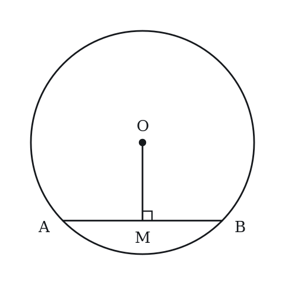
(A) 2.5
(B) 5
(C) 7.5
(D) 10
(E) 20
Q3 · GEO-CTS-003 · MCQ · 35s
Two tangents are drawn from external point P to a circle, touching it at points A and B. If PA = 7, what is PB?
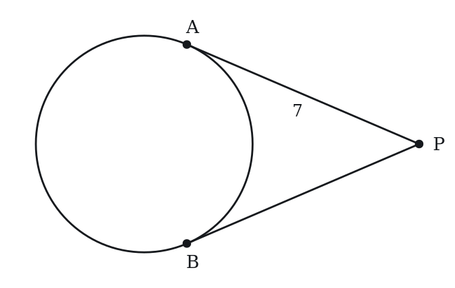
(A) sqrt(7)
(B) 3.5
(C) 7
(D) 14
(E) 49
Q4 · GEO-CTS-004 · Numeric Entry · 55s
A circle has radius 13. A chord is drawn such that the perpendicular distance from the center to the chord is 5. What is the length of the chord?
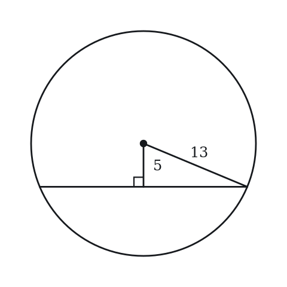
Numeric entry — write the number.
Q5 · GEO-CTS-006 · QC · 40s
A tangent PA and a radius OA are drawn to the same point A on a circle, where O is the center.
Quantity A: Angle OAP Quantity B: 90°
Q6 · GEO-CTS-008 · Select all that apply · 60s
Which of the following statements about a tangent to a circle are always true? Select all that apply.
(A) The tangent meets the circle at exactly one point.
(B) The tangent is perpendicular to the radius at the point of tangency.
(C) Two tangents from the same external point have equal length.
(D) The tangent passes through the center of the circle.
(E) The tangent is parallel to all chords of the circle.
Q7 · GEO-CTS-010 · MCQ · 40s
An inscribed angle intercepts an arc of 80°. What is the measure of the inscribed angle?
(A) 20°
(B) 40°
(C) 80°
(D) 160°
(E) 320°
Level 2 · Medium — 15 questions · ~19 min
two or three steps, one planted trap each
Q8 · GEO-CTS-013 · MCQ · 70s
From external point P, a secant passes through the circle intersecting it at A then B (PA = 3, PB = 12). Another secant intersects the circle at C then D (PC = 4). What is PD?
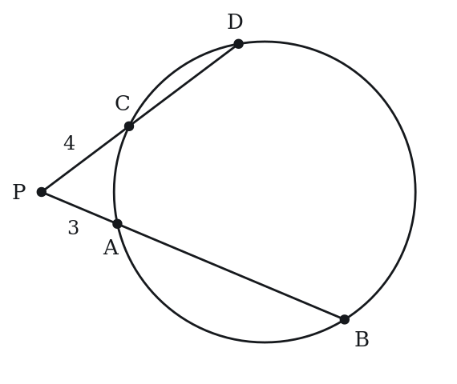
(A) 6
(B) 7
(C) 8
(D) 9
(E) 12
Q9 · GEO-CTS-014 · QC · 65s
From external point P, tangent PT touches the circle at T, and a secant through P meets the circle at A and B (in that order from P). PA = 2, PB = 8.
Quantity A: PT Quantity B: 4
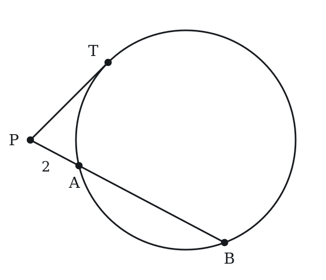
Q10 · GEO-CTS-015 · MCQ · 65s
A circle has center O and radius 5. Chord AB is 6 units long. What is the distance from the center O to chord AB?
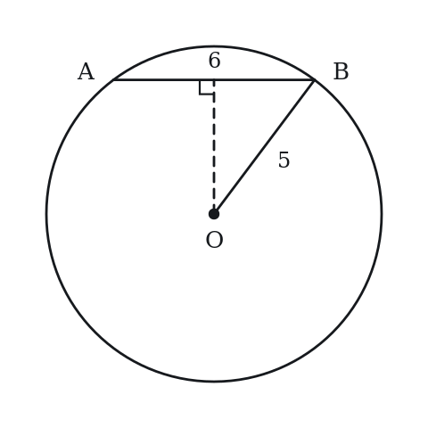
(A) 2
(B) 3
(C) 4
(D) 5
(E) 6
Q11 · GEO-CTS-016 · Numeric Entry · 60s
In a circle, two chords PQ and RS intersect at T. PT = 3, TQ = 12, and RT = 4. What is TS?
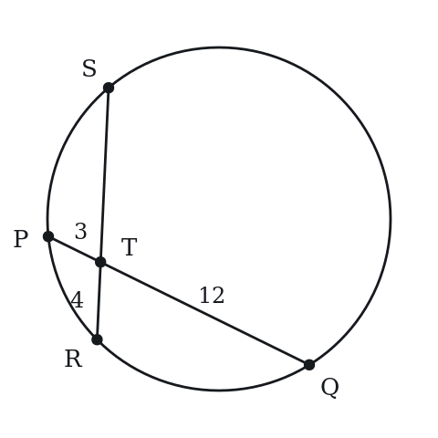
Numeric entry — write the number.
Q12 · GEO-CTS-017 · QC · 75s
Circle O has radius 10. Chord AB is 12 units long. Chord CD is at distance 8 from center O.
Quantity A: Distance from center O to chord AB Quantity B: Distance from center O to chord CD
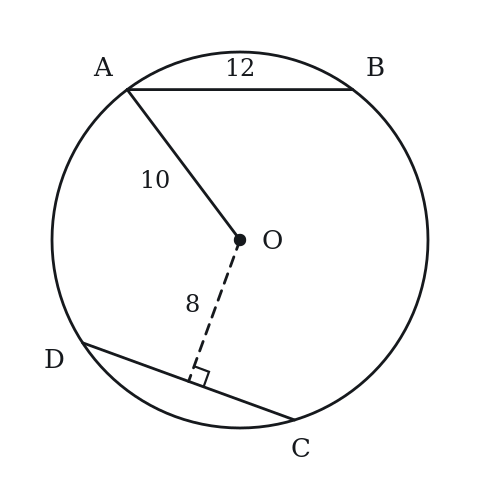
Q13 · GEO-CTS-018 · Select all that apply · 80s
From external point P, tangent PT and secant PAB are drawn to a circle, with A between P and B. Which of the following equations must be true? Select all that apply.
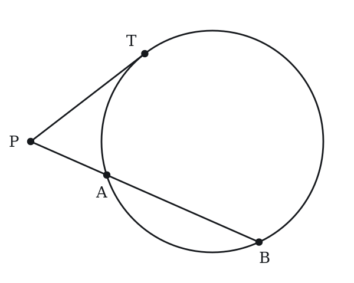
(A) PT² = PA × PB
(B) PT = PA + PB
(C) PT² = PA × AB
(D) PT² = PA × (PA + AB)
(E) PT² = (PB - PA) × PB
Q14 · GEO-CTS-021 · Numeric Entry · 80s
A circle with center O has radius 7. Point P is outside the circle, with PO = 25. Segments PA and PB are tangent to the circle at A and B. What is the area of quadrilateral OAPB?
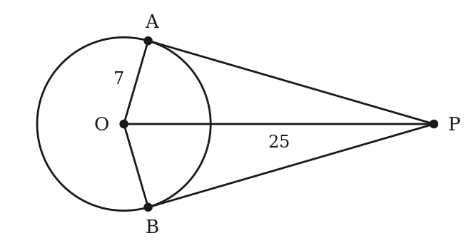
Numeric entry — write the number.
Q15 · GEO-CTS-022 · MCQ · 70s
Two chords AB and CD intersect at P inside a circle. AP = 6, PB = 4, and CP = 3. The full length of chord CD is:
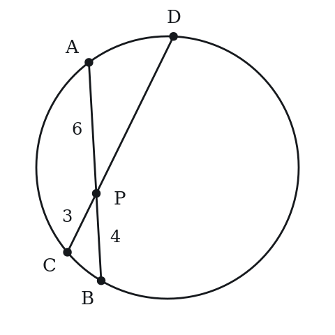
(A) 7
(B) 8
(C) 11
(D) 13
(E) 16
Q16 · GEO-CTS-023 · QC · 70s
A circle has radius r. Chord AB is at distance d from the center (d < r).
Quantity A: Length of chord AB Quantity B: 2√(r² - d²)
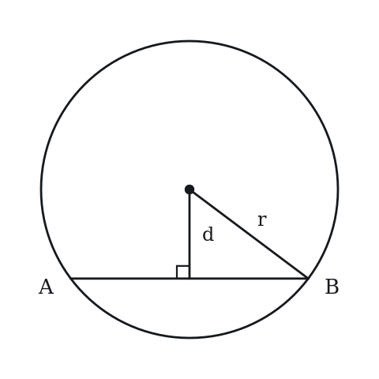
Q17 · GEO-CTS-024 · MCQ · 60s
From external point P, a tangent PT is drawn to a circle (T is point of tangency). A secant from P passes through the circle at A (nearer) and B (farther), with PA = 5 and PB = 20. What is PT?
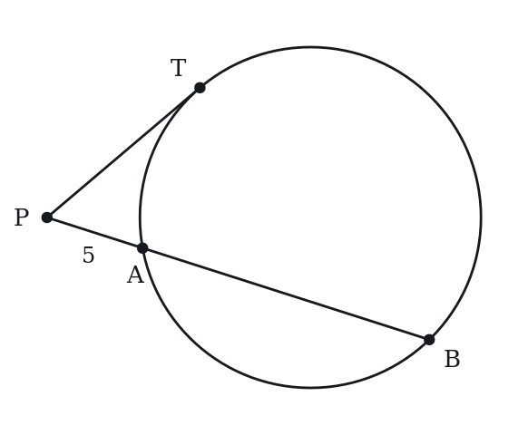
(A) 5
(B) 8
(C) 10
(D) 12.5
(E) 100
Q18 · GEO-CTS-025 · Select all that apply · 90s
A chord PQ of a circle passes through the center of the circle. Which of the following are necessarily true? Select all that apply.
(A) PQ is a diameter of the circle.
(B) PQ is the longest chord of the circle.
(C) The distance from the center to PQ is positive.
(D) PQ subtends a semicircle on each side.
(E) Any inscribed angle that intercepts PQ as its arc measures 90°.
Q19 · GEO-CTS-026 · QC · 80s
Circle has radius 5. Chord A is at distance 3 from the center. Chord B is at distance 4 from the center.
Quantity A: Length of Chord A Quantity B: Length of Chord B
Q20 · GEO-CTS-027 · MCQ · 90s
In a circle with center O and radius 13, chord AB has length 24, and M is the midpoint of AB. The line through O and M intersects the circle at two points. What is the distance from M to the nearer of those two points?
(A) 5
(B) 8
(C) 12
(D) 13
(E) 18
Q21 · GEO-CTS-035 · MCQ · 90s
In a circle, chord PQ is perpendicular to diameter AB at point M. AM = 4 and MB = 9. What is the length of PM (half the chord PQ)?
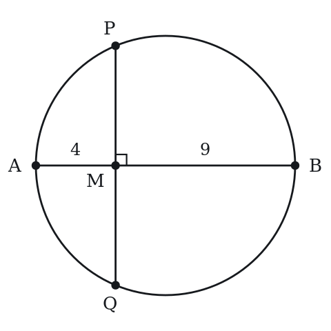
(A) 4
(B) 5
(C) 6
(D) 7
(E) 8
Q22 · GEO-CTS-KMF2-002 · Numeric Entry · 85s
In the figure above, O is the center of the circle, A and B lie on the circle, and T lies on ray AO beyond O. Segment TB is tangent to the circle at B. If the measure of angle AOB is 140 degrees, what is the measure, in degrees, of angle T?
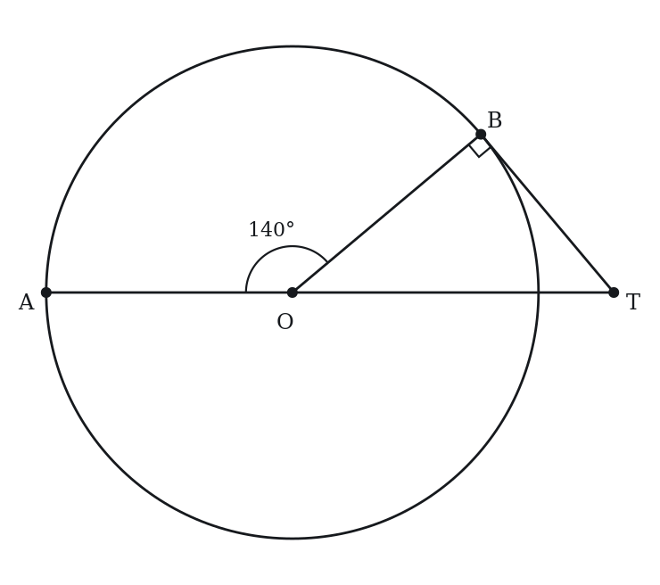
Numeric entry — write the number.
Level 3 · Hard — 8 questions · ~13 min
where 162+ is won or lost
Q23 · GEO-CTS-028 · Numeric Entry · 90s
A circle has center O. The lines that are tangent to the circle at points A and B intersect at point P, and the measure of angle APB is 40 degrees. What is the measure, in degrees, of angle AOB?
Numeric entry — write the number.
Q24 · GEO-CTS-029 · MCQ · 95s
A circle has center O and radius r. From external point P, two tangents PA and PB are drawn (PA = PB = 15). The angle APB = 60°. What is the radius r?
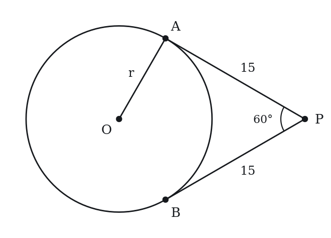
(A) 5
(B) 5√3
(C) 10
(D) 15√3/2
(E) 15
Q25 · GEO-CTS-031 · Select all that apply · 85s
AB is a chord of a circle with radius 6, and AB is not a diameter of the circle. Which of the following could be the length of AB?
Indicate all such lengths.
(A) 3
(B) 6sqrt(2)
(C) 12
(D) 12.5
(E)* 6π
Q26 · GEO-CTS-033 · MCQ · 85s
Points A, B and C lie on a circle with radius 5. If AB = 6, AC = 8 and BC = 10, what is the measure of angle BAC?
(A) 30 degrees
(B) 45 degrees
(C) 60 degrees
(D) 90 degrees
(E) 120 degrees
Q27 · GEO-CTS-036 · Numeric Entry · 105s
In a circle, chord AB has length 16. The perpendicular bisector of AB meets the minor arc AB at point C, and the distance from C to chord AB is 4. What is the radius of the circle?
Numeric entry — write the number.
Q28 · GEO-CTS-KMF-001 · MCQ · 120s
In the figure, lines PS and PT touch the circle with center O at S and T. Point R lies on the shorter arc ST. Angle PSR measures 24 degrees and angle PTR measures 31 degrees. What is the measure, in degrees, of angle SPT?
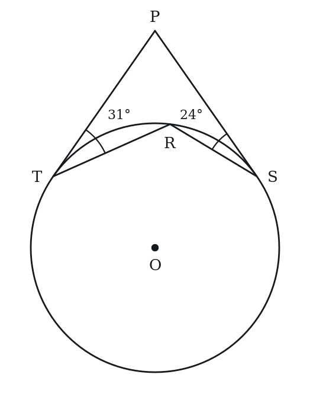
(A) 55
(B) 70
(C) 110
(D) 125
(E) 250
Q29 · GEO-CTS-KMF2-003 · MCQ · 100s
The figure above shows a circle with center O. Line MN is tangent to the circle at point P, and the measure of angle PON is 30 degrees. If PN = 5sqrt(3), what is the circumference of the circle?
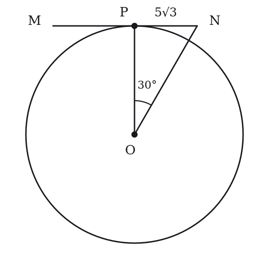
(A) 10pi
(B) 15pi
(C) 30pi
(D) 45pi
(E) 60pi
Q30 · SEC-CS-027 · QC · 105s
In the circle with center O and radius k, A and B are points on the circle and AB is not a diameter.
Note: Figure not drawn to scale.
Quantity A: the perimeter of triangle AOB Quantity B: 3.5k
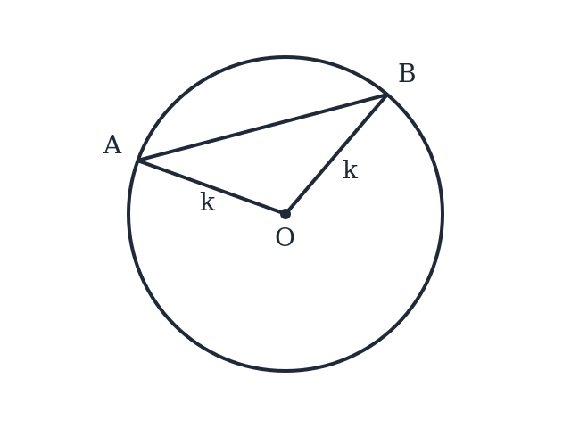
The rest of this sheet is part of Pro
All 30 questions, the answer key and full worked solutions with every trap named — plus 75 concept notes and 9,629 questions.